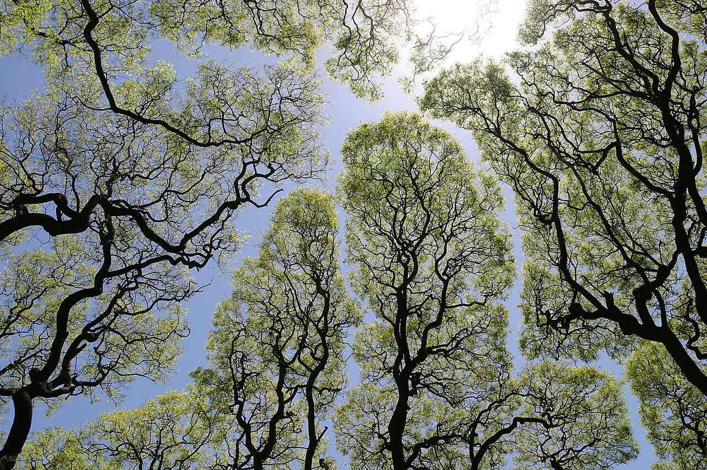
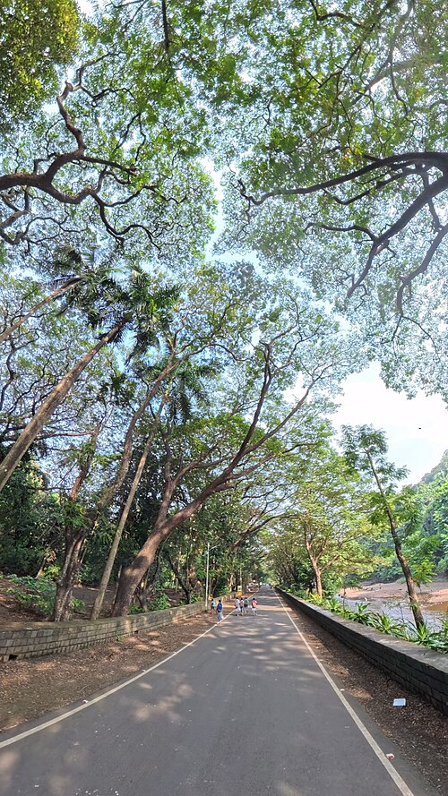

Crown Shyness
From Wikipedia, the free encyclopedia
For the album by Trash Boat, see Crown Shyness (album)
Crown Shyness (also canopy disengagement, canopy shyness,
or inter-crown spacing) is a phenomenon observed in some
tree species, in which the crowns of fully stocked trees do not
touch each other, forming a canopy with channel-like gaps. The
phenomenon is most prevalent among trees of the same species,
but also occurs between trees of different species. There exist
many hypotheses as to why crown shyness is an adaptive behavior,
and research suggests that it might inhibit spread of
leaf-eating insect larvae.
Contents
Possible Physiological
Explanations

Canopy of D. aromatica at the Forest Research Institute
Malaysia displaying crown shyness
The exact physiological basis of crown shyness is uncertain.[6]
The phenomenon has been discussed in scientific literature since
the 1920s.[9] The variety of hypotheses and experimental results
might suggest that there are multiple mechanisms across different
species, an example of convergent evolution.[citation needed]
Some hypotheses contend that the interdigitation of canopy branches
leads to "reciprocal pruning" of adjacent trees: trees in windy
areas suffer physical damage as they collide with each other during
winds; the abrasions and collisions induce a crown shyness response.
Studies suggest that lateral branch growth is largely uninfluenced
by neighbours until disturbed by mechanical abrasion.[10] If the
crowns are artificially prevented from colliding in the winds, they
gradually fill the canopy gaps.[11] This explains instances of crown
shyness between branches of the same organism. Proponents of this
idea cite that shyness is particularly seen in conditions conducive
to this pruning, including windy forests, stands of flexible trees,
and early succession forests where branches are flexible and limited
in lateral movement.[6][12] According to this theory, variable
flexibility in lateral branches greatly influences the degree of
crown shyness.

Trees at Plaza San Martín (Buenos Aires), Argentina
Similarly, some research suggests that constant abrasion at growth
nodules disrupts bud tissue such that it is unable to continue with
lateral growth. Australian forester M.R. Jacobs, who studied the
crown shyness patterns in eucalyptus in 1955, believed that the
trees' growing tips were sensitive to abrasion, resulting in
canopy gaps.[13] Miguel Franco (1986) observed that the branches of
Picea sitchensis (Sitka spruce) and Larix kaempferi (Japanese larch)
suffered physical damage due to abrasion, which killed the leading
shoots.[10][14]
A prominent hypothesis is that canopy shyness has to do with mutual
light sensing by adjacent plants. The photoreceptor-mediated shade
avoidance response is a well-documented behavior in a variety of
plant species.[15] Neighbor detection is thought to be a function of
several unique photoreceptors. Plants can sense the proximity of
neighbors by sensing backscattered far-red light, a task widely
thought to be accomplished by the activity of the phytochrome
photoreceptors.[16] Many species of plant respond to an increase in
far-red light (and, by extension, encroaching neighbors) by
directing growth away from the far-red stimulus and by increasing
the rate of elongation.[17] Similarly, plants use blue light to
induce the shade-avoidance response, likely playing a role in the
recognition of neighboring plants,[18] though this was just starting
to be recognised in 1988.[19]
The characterization of these behaviors might suggest that crown
shyness is simply the result of mutual shading based on
well-understood shade avoidance responses.[6][20] Malaysian scholar
Francis S.P. Ng, who studied Dryobalanops aromatica, suggested that
the growing tips were sensitive to light levels and stopped growing
when nearing the adjacent foliage due to the induced shade.[6][20]

The timidity of the crown in Sanjay Gandhi National Park
A 2015 study has suggested that Arabidopsis thaliana shows different
leaf placement strategies when grown amongst kin and unrelated
conspecifics, shading dissimilar neighbors and avoiding kin. This
response was shown to be contingent on the proper functioning of
multiple photosensory modalities.[21] A 1998 study proposed similar
systems of photoreceptor-mediated inhibition of growth as
explanations of crown shyness,[6][20] though a causal link between
photoreceptors and crown asymmetry had yet to be experimentally
proven. This might explain instances of intercrown spacing that are
only exhibited between conspecifics.[6][7]
Trees that display crown shyness patterns include:
- Species of Dryobalanops, including Dryobalanops
lanceolata[22] and Dryobalanops aromatica (kapur)
- Some species of eucalypt[23]
- Pinus contorta or lodgepole pine[1]
- Avicennia germinans or black mangrove[3]
- Schefflera pittieri[6][12]
- Clusia alata[6][12]
- K. Paijmans observed crown shyness in a multi-species group of
trees, comprising Celtis spinosa and Pterocymbium
beccarii[7]
Media related to Crown shyness at Wikimedia Commons
Back To Top